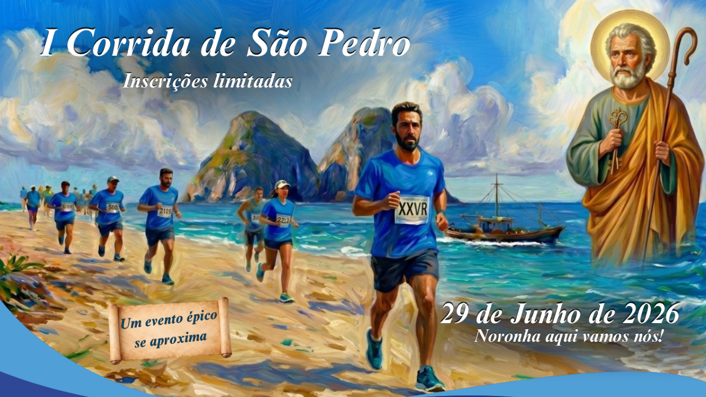
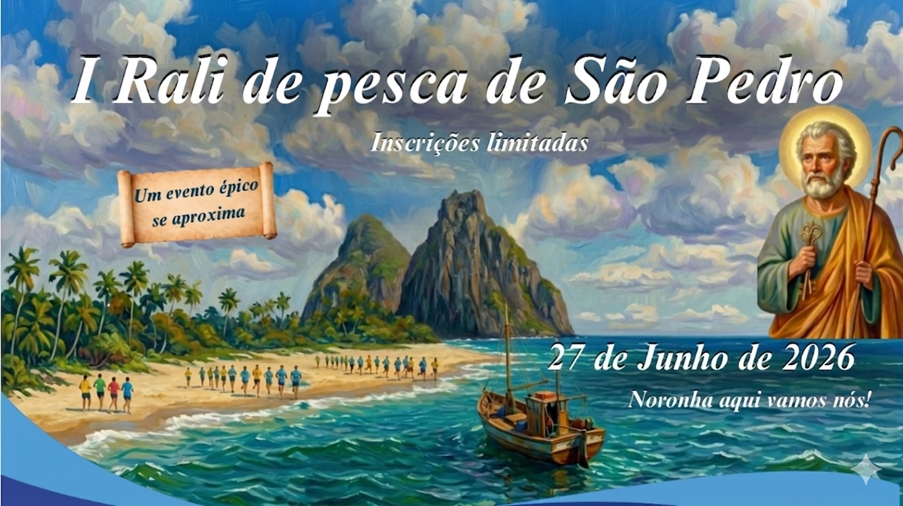
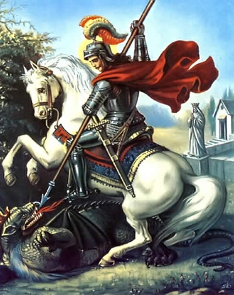
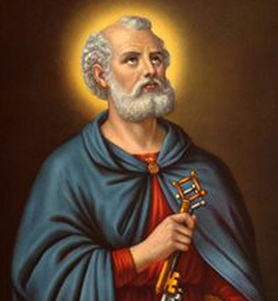
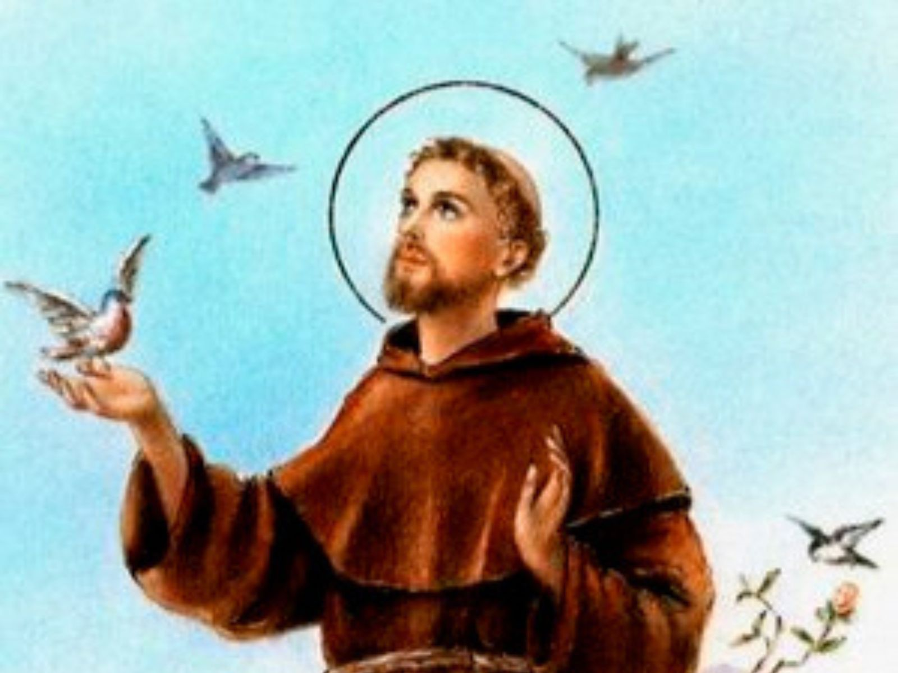
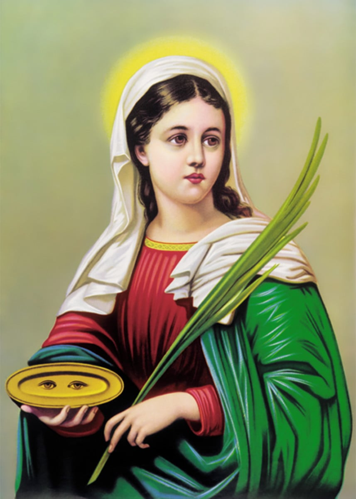
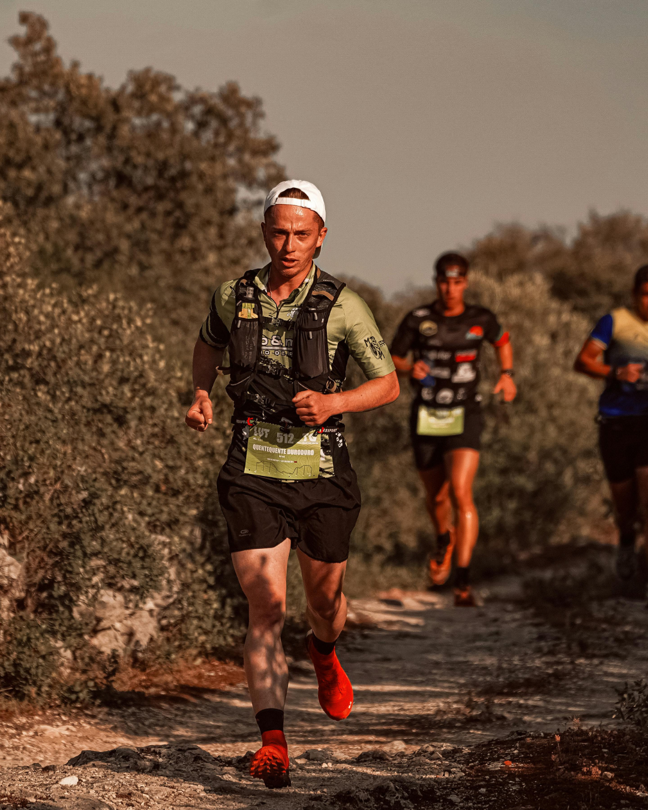
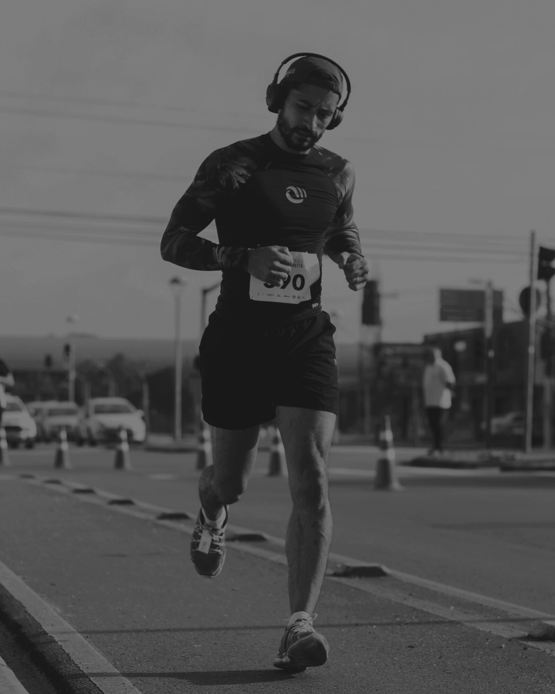

COMPRAR INGRESSO
COMPRAR INGRESSO
COMPRAR INGRESSO

São Jorge é símbolo de coragem em movimento. Um guerreiro que não recua diante do desafio. Mais do que uma batalha física, sua história representa o enfrentamento do medo, das dúvidas e das forças que tentam paralisar.

São Pedro era pescador, alguém acostumado ao esforço diário, à paciência do mar e à incerteza das redes. Foi justamente ali, na rotina simples da pesca, que Jesus o chamou para algo maior: “ser pescador de homens”.

São Francisco é a leveza em movimento. Enquanto muitos avançam pela força, ele segue pela simplicidade. Sua caminhada é marcada pela conexão com a natureza, com os animais, com tudo que vive.

Santa Luzia carrega no próprio nome o seu significado: luz. Diz a tradição que ela perdeu a visão, mas nunca perdeu a clareza. Pelo contrário, tornou-se símbolo de quem ilumina caminhos, mesmo na escuridão.


Correr é uma ação do corpo, mas também um ato de fé.
Você entra no caminho, conhece a distância, mas os desafios surgem a cada passo.
A corrida reflete a essência da fé: persistir mesmo quando dói, avançar mesmo quando o desejo é parar.
São instantes de conexão profunda, de superação… É o foco no propósito que te impulsiona adiante.
No final, correr é uma oração em movimento.
PATROCINADORES OFICIAIS
Faça parte!